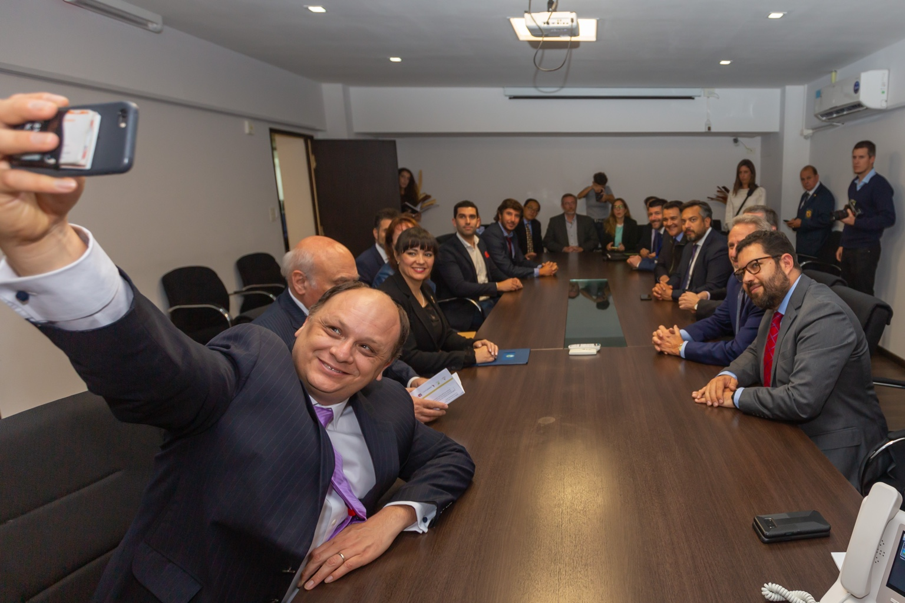
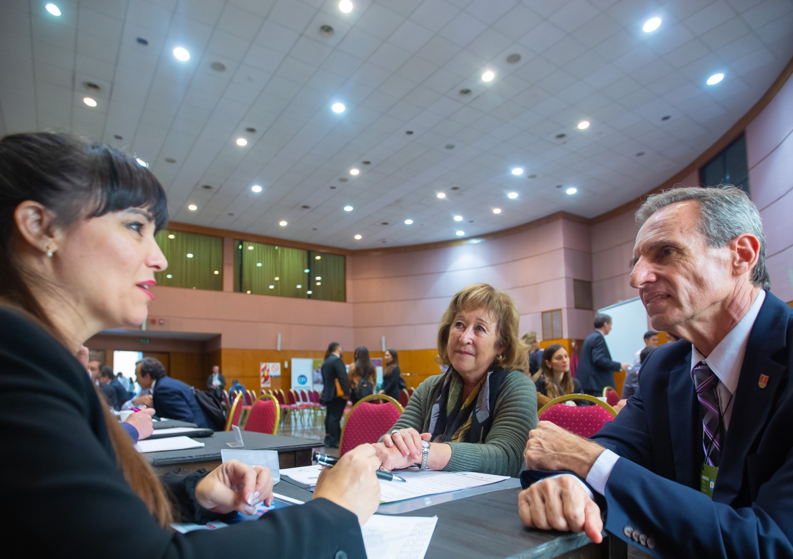
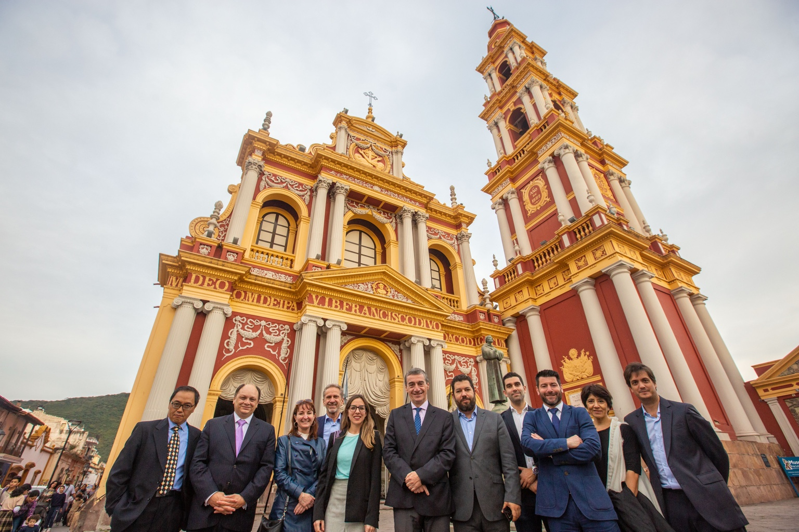
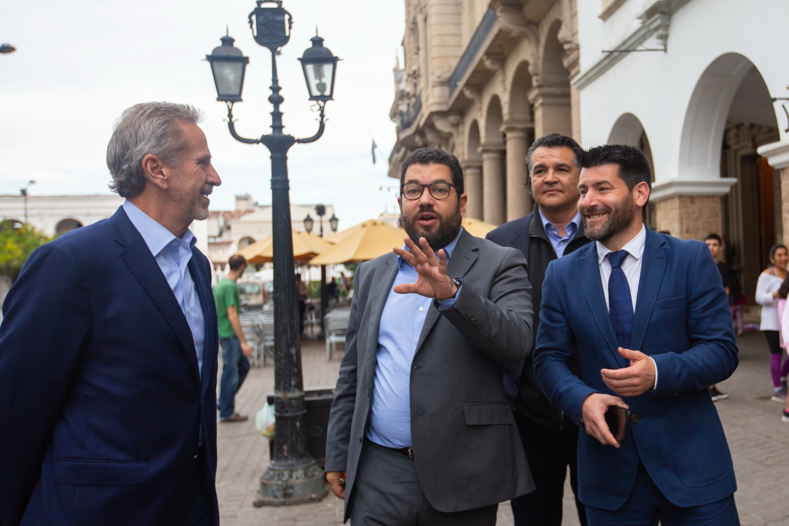
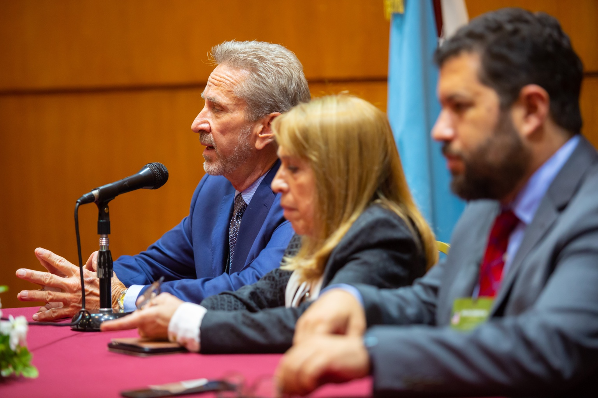
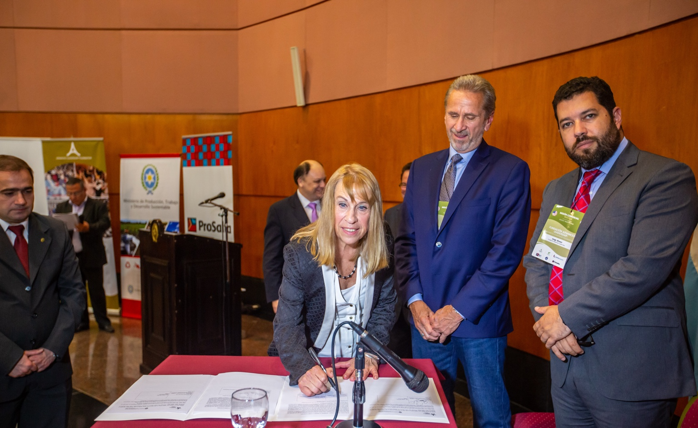
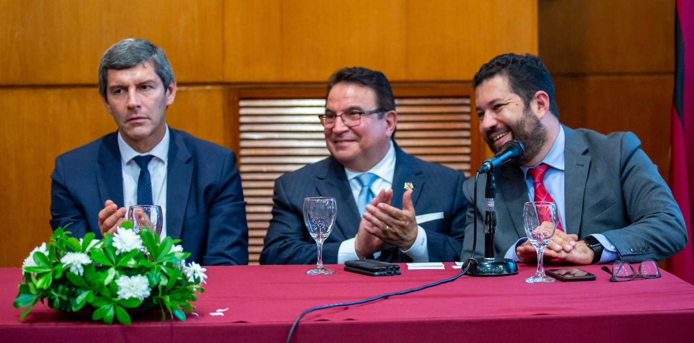

Overview
In 2017, the province of Salta partnered with ALF and the U.S. Department of Commerce to host a certified trade mission, marking one of the first large-scale efforts to connect the province’s economy with U.S. investors and international markets.
Strategic Positioning
Salta occupies a unique place in Argentina’s economic geography. Located at the crossroads of Andean trade routes and within the Lithium Triangle, it combines traditional sectors such as wine, agriculture and livestock with emerging opportunities in renewable energy, mining and logistics.
Program Architecture
- Investment forums where provincial leaders presented Salta’s development strategy and sector priorities.
- B2B sessions between U.S. executives and local companies across agroindustry, energy, mining and tourism.
- Site visits to vineyards, industrial facilities and renewable energy projects.
Outcomes & Legacy
The mission generated new export opportunities in viticulture and agroindustry, exploratory partnerships in lithium and renewable energy, tourism promotion opportunities and institutional cooperation agreements between chambers of commerce in Salta and U.S. business councils.
Salta Certified Trade Mission in Pictures
A visual record of institutional meetings, business matchmaking sessions, sector briefings and networking moments that shaped the mission.






